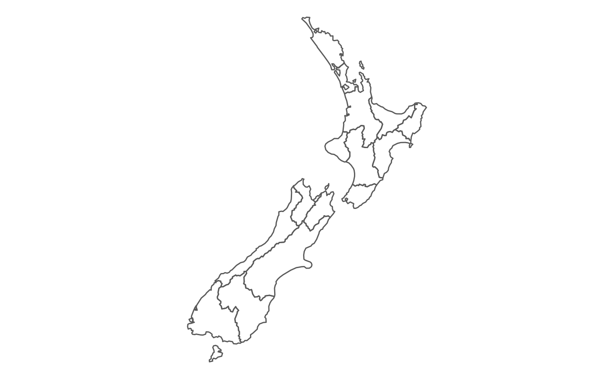
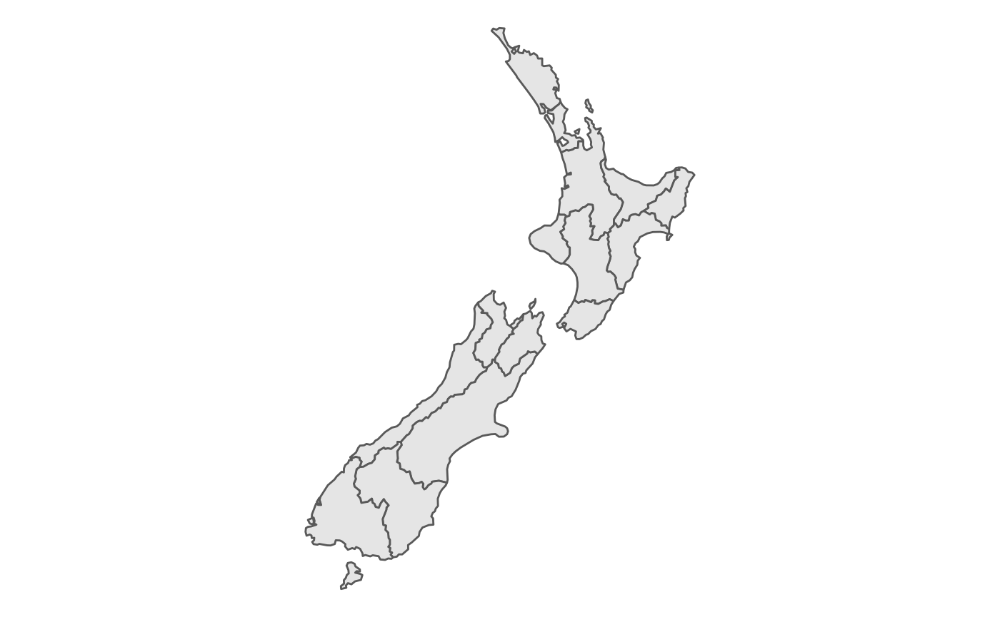
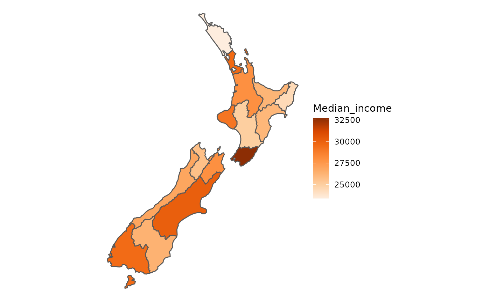
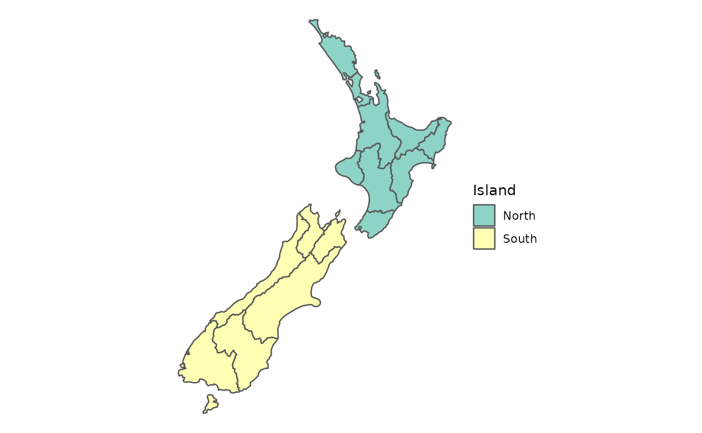

Chapter 8: Making maps with R
Robin Lovelace, Jakub Nowosad, Jannes Muenchow
2020-04-21
Source:vignettes/solutions08.Rmd
solutions08.RmdPrerequisites
The solutions assume the following packages are attached (other packages will be attached when needed):
library(sf) library(raster) library(dplyr) library(spData) library(tmap) library(leaflet) library(cartogram)
These exercises rely on a new object, africa. Create it using the world and worldbank_df datasets from the spData package as follows (see Chapter 3):
africa = world %>% filter(continent == "Africa", !is.na(iso_a2)) %>% left_join(worldbank_df, by = "iso_a2") %>% dplyr::select(name, subregion, gdpPercap, HDI, pop_growth) %>% st_transform("+proj=aea +lat_1=20 +lat_2=-23 +lat_0=0 +lon_0=25")
We will also use zion and nlcd datasets from spDataLarge:
zion = st_read((system.file("vector/zion.gpkg", package = "spDataLarge"))) data(nlcd, package = "spDataLarge")
Chapter 8
- Create a map showing the geographic distribution of the Human Development Index (
HDI) across Africa with base graphics (hint: useplot()) and tmap packages (hint: usetm_shape(africa) + ...).- Name two advantages of each, based on the experience.
- Name three other mapping packages and an advantage of each.
- Bonus: create three more maps of Africa using these three packages.
Maps can be made with this object as follows:
plot(africa["HDI"]) tm_shape(africa) + tm_polygons("HDI")
- Base graphics is fast, widely available (has few dependencies, available on all R installations) and well-known among R users.
- tmap has settings well-suited to mapping, it supports many spatial data formats, is flexible, and allows interactive and static maps to be made with the same code.
- ggplot2, leaflet and cartography are other packages that could be used for the same job (there are many others). They have the following advantes: intuitive and flexible grammar; low level control over interactive elements; and the ability to create cartograms.
Examples using other packages are as follows:

library(leaflet) leaflet() %>% addTiles() %>% addPolygons(data = st_transform(africa, 4326))
library(cartogram) africa_carto = cartogram_cont(africa, "HDI", itermax = 5) tm_shape(africa_carto) + tm_polygons("HDI")
- Extend the map of Africa created with tmap for the previous exercise so the legend has three bins: “High” (
HDIabove 0.7), “Medium” (HDIbetween 0.55 and 0.7) and “Low” (HDIbelow 0.55).- Bonus: improve the map aesthetics, for example by changing the legend title, class labels and color palette.
# >0.8 - Very high human development # >0.7 - High human development # >0.55 - Medium human development # <0.55 - Low human development sm1 = tm_shape(africa) + tm_polygons( col = "HDI", title = "Human Development Index", breaks = c(0, 0.55, 0.7, 0.8), labels = c("Low", "Medium", "High"), palette = "YlGn") sm1
- Represent
africa’s subregions on the map. Change the default color palette and legend title. Next, combine this map and the map created in the previous exercise into a single plot.
sm2 = tm_shape(africa) + tm_polygons(col = "subregion", title = "Subregion", palette = "Set2") tmap_arrange(sm2, sm1)
- Create a land cover map of the Zion National Park.
- Change the default colors to match your perception of the land cover categories
- Add a scale bar and north arrow and change the position of both to improve the map’s aesthetic appeal
- Bonus: Add an inset map of the Zion National Park’s location in the context of the Utah state. (Hint: an object representing Utah can be subsetted from the
us_statesdataset.)
lc_colors = c("#476ba0", "#aa0000", "#b2ada3", "#68aa63", "#a58c30", "#c9c977", "#dbd83d", "#bad8ea") sm3 = tm_shape(nlcd) + tm_raster("levels", palette = lc_colors, title = "Land cover") + tm_shape(zion) + tm_borders(lwd = 3) + tm_scale_bar(size = 1, position = "left") + tm_compass(type = "8star", position = c("RIGHT", "top")) + tm_layout(legend.frame = TRUE, legend.position = c(0.6, "top")) + tm_layout(frame.lwd = 4) sm3
utah = dplyr::filter(us_states, NAME == "Utah") zion_bbox = st_as_sfc(st_bbox(nlcd)) im = tm_shape(utah) + tm_polygons(lwd = 3, border.col = "black") + tm_shape(zion_bbox) + tm_polygons(col = "green", lwd = 1) + tm_layout(title = "UTAH", title.size = 2, title.position = c("center", "center")) + tm_layout(frame = FALSE, bg.color = NA) library(grid) print(sm3, vp = grid::viewport(0.5, 0.5, width = 0.95, height = 0.95)) print(im, vp = grid::viewport(0.2, 0.4, width = 0.35, height = 0.35))
- Create facet maps of countries in Eastern Africa:
- With one facet showing HDI and the other representing population growth (hint: using variables
HDIandpop_growthrespectively) - With a ‘small multiple’ per country
- With one facet showing HDI and the other representing population growth (hint: using variables
eastern_africa = filter(africa, subregion == "Eastern Africa")
tm_shape(eastern_africa) + tm_polygons(col = c("HDI", "pop_growth")) + qtm(africa, fill = NULL) tm_shape(eastern_africa) + tm_polygons("pop_growth", style = "jenks", palette = "BuPu") + tm_facets(by = "name", drop.NA.facets = TRUE)
- Building on the previous facet map examples, create animated maps of East Africa:
- Showing first the spatial distribution of HDI scores then population growth
- Showing each country in order
m = tm_shape(eastern_africa) + tm_polygons(col = c("HDI", "pop_growth")) + qtm(africa, fill = NULL) + tm_facets(ncol = 1, nrow = 1) tmap_animation(m, filename = "m.gif") browseURL("m.gif") m = tm_shape(eastern_africa) + tm_polygons("pop_growth", style = "jenks", palette = "BuPu") + tm_facets(by = "name", drop.NA.facets = TRUE, ncol = 1, nrow = 1) tmap_animation(m, filename = "m.gif") browseURL("m.gif")
- Create an interactive map of Africa:
- With tmap
- With mapview
- With leaflet
- Bonus: for each approach add a legend (if not automatically provided) and a scale bar.
# with tmap: tmap_mode("view") tm_shape(eastern_africa) + tm_polygons("pop_growth") + tm_scale_bar() # bonus scale bar tmap_mode("plot")
# with leaflet library(leaflet) eastern_africa_wgs = st_transform(eastern_africa, 4326) pal = colorNumeric("RdYlBu", domain = eastern_africa_wgs$pop_growth) leaflet(data = eastern_africa_wgs) %>% addProviderTiles(providers$OpenTopoMap) %>% addPolygons(fillColor = ~pal(pop_growth), fillOpacity = .8) %>% addLegend(pal = pal, values = ~pop_growth)
- Sketch on paper ideas for a web mapping app that could be used to make transport or land-use policies more evidence based:
- In the city you live in, for a couple of users per day
- In the country you live in, for dozens of users per day
- Worldwide for hundreds of users per day and large data serving requirements
Ideas could include identification of routes where many people currently drive short distances, ways to encourage access to parks, or prioritisation of new developments to reduce long-distance travel.
At the city level a web map would be sufficient.
A the national level a mapping application, e.g. with shiny, would probably be needed.
Worldwide, a database to serve the data would likely be needed. Then various front-ends could plug in to this.
- Update the code in
coffeeApp/app.Rso that instead of centering on Brazil the user can select which country to focus on:- Using
textInput() - Using
selectInput()
- Using
The answer can be found in the shinymod branch of the geocompr repo: https://github.com/Robinlovelace/geocompr/pull/318/files You create the new widget and then use it to set the center. Note: the input data must be fed into the map earlier to prevent the polygons disappearing when you change the center this way.
- Reproduce this Figure and the 1st and 6th panel of this Figure as closely as possible using the ggplot2 package.
# fig 8.1 ggplot() + geom_sf(data = nz, color = NA) + coord_sf(crs = st_crs(nz), datum = NA) + theme_void()
ggplot() + geom_sf(data = nz, fill = NA) + coord_sf(crs = st_crs(nz), datum = NA) + theme_void()

ggplot() + geom_sf(data = nz) + coord_sf(crs = st_crs(nz), datum = NA) + theme_void()

# fig 8.6 ggplot() + geom_sf(data = nz, aes(fill = Median_income)) + coord_sf(crs = st_crs(nz), datum = NA) + scale_fill_distiller(palette = "Oranges", direction = 1) + theme_void()

ggplot() + geom_sf(data = nz, aes(fill = Island)) + coord_sf(crs = st_crs(nz), datum = NA) + scale_fill_brewer(palette = "Set3") + theme_void()

- Join
us_statesandus_states_dftogether and calculate a poverty rate for each state using the new dataset. Next, construct a continuous area cartogram based on total population. Finally, create and compare two maps of the poverty rate: (1) a standard choropleth map and (2) a map using the created cartogram boundaries. What is the information provided by the first and the second map? How do they differ from each other?
library(cartogram) # prepare the data us = st_transform(us_states, 2163) us = us %>% left_join(us_states_df, by = c("NAME" = "state")) # calculate a poverty rate us$poverty_rate = us$poverty_level_15 / us$total_pop_15 # create a regular map ecm1 = tm_shape(us) + tm_polygons("poverty_rate", title = "Poverty rate") # create a cartogram us_carto = cartogram(us, "total_pop_15") ecm2 = tm_shape(us_carto) + tm_polygons("poverty_rate", title = "Poverty rate") # combine two maps tmap_arrange(ecm1, ecm2)
- Visualize population growth in Africa. Next, compare it with the maps of a hexagonal and regular grid created using the geogrid package.
# devtools::install_github("jbaileyh/geogrid") library(geogrid) hex_cells = calculate_grid(africa, grid_type = "hexagonal", seed = 25, learning_rate = 0.03) africa_hex = assign_polygons(africa, hex_cells) reg_cells = calculate_grid(africa, grid_type = "regular", seed = 25, learning_rate = 0.03) africa_reg = assign_polygons(africa, reg_cells) tgg1 = tm_shape(africa) + tm_polygons("pop_growth", title = "Population's growth (annual %)") tgg2 = tm_shape(africa_hex) + tm_polygons("pop_growth", title = "Population's growth (annual %)") tgg3 = tm_shape(africa_reg) + tm_polygons("pop_growth", title = "Population's growth (annual %)") tmap_arrange(tgg1, tgg2, tgg3)